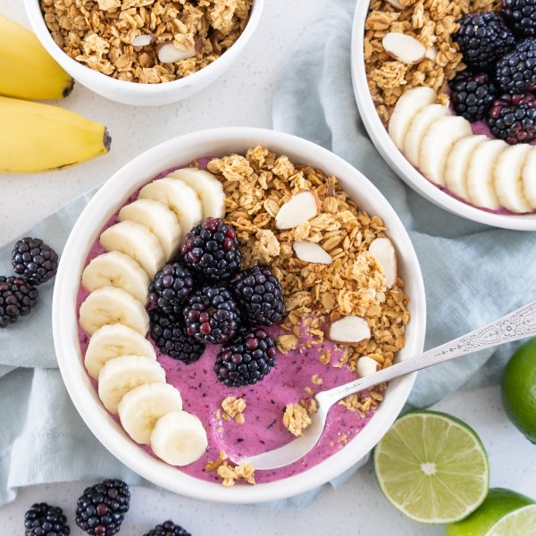

Mixed Berry-Lime Smoothie Bowl with Banana & Granola

Total Time
15 min
Nutrition (per serving)
498.9 kcalCalories
21 gProtein
81.8 gCarbs
12 gFat
Full nutrition table
| Calories | 498.9 kcal |
| Total fat | 12 g |
| Saturated fat | 2.8 g |
| Trans fat | 0.1 g |
| Cholesterol | 12.2 mg |
| Sodium | 85.4 mg |
| Carbohydrates | 81.8 g |
| Fiber | 11.5 g |
| Sugars | 50.6 g |
| Protein | 21 g |
| Potassium | 840.7 mg |
| Calcium | 278.7 mg |
| Iron | 3.4 mg |
| Vitamin A | 297.8 IU |
| Vitamin C | 94.9 mg |
| Vitamin D | 31.1 IU |
Cookware
Ingredients
- 2bananas
- 1 (6 oz) pkgblackberries
- 4 cupsfrozen mixed berries
- 320 mlgranola
- 1lime
- 2 cupsplain Greek yogurt
- 8 fl ozwhole milk
- cinnamon, ground
- honey
Steps
- This recipe will make about 6 cups of smoothie. Work in batches to best fit your blender.
- Wash and dry the fresh produce.2 bananas
1 lime
1 (6 oz) pkg blackberries - Peel and thinly slice bananas; set aside.
- Zest and juice lime into a blender.
- Add frozen mixed berries, yogurt, milk, honey, and cinnamon to the blender.4 cup frozen mixed berries
2 cups plain Greek yogurt
8 fl oz (1 cup) whole milk
¼ cup honey
½ tsp cinnamon, ground - Blend on high speed until smooth, 1-2 minutes.
- To serve, divide smoothie between bowls and top with banana, blackberries, and granola. Enjoy!1 ⅓ cup granola